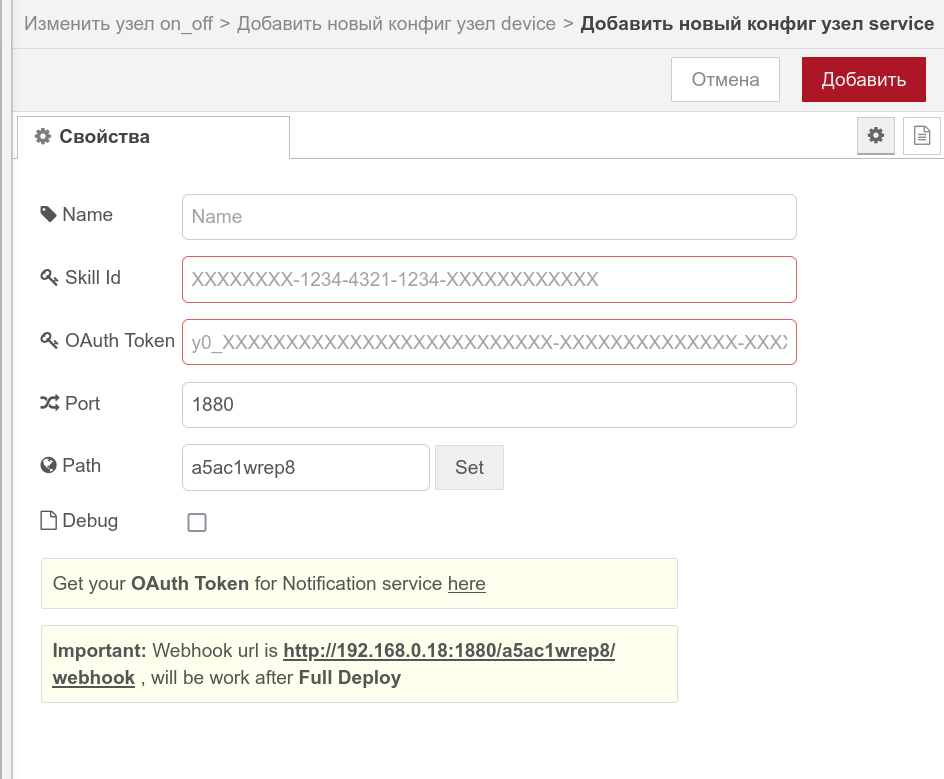
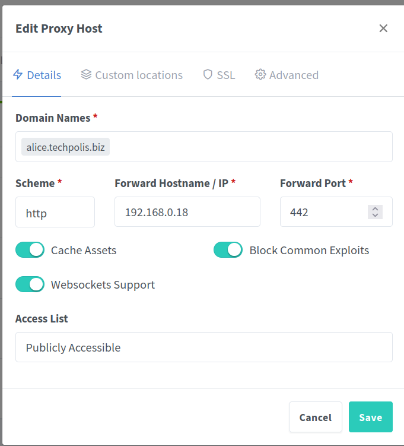
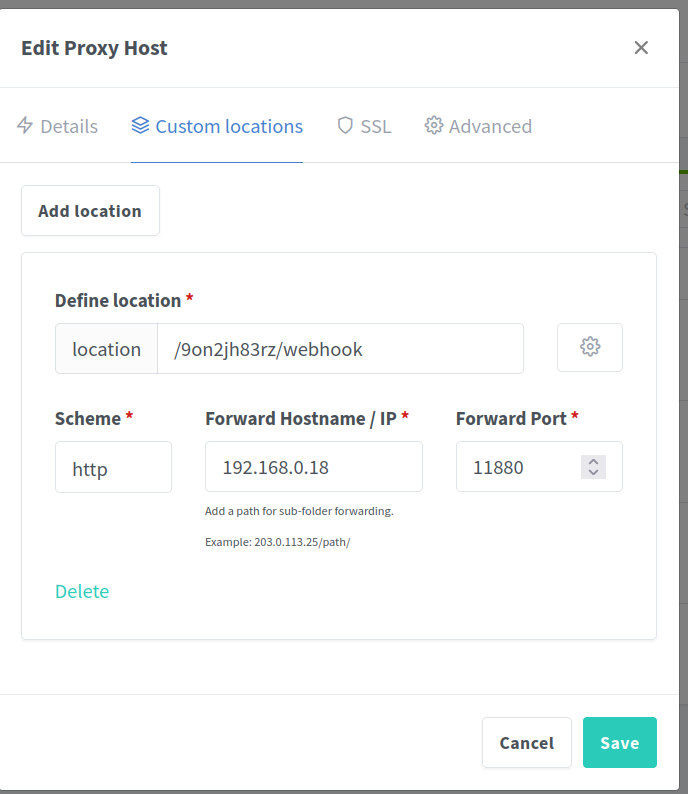

Со стороны NodeRed использую ноду https://flows.nodered.org/node/node-red-contrib-alice-self-hosting
Нода отвратительно документарована. На момент подключения (29-01-2025) актуальная версия Version: 0.2.4 альфа-стадия
Есть телеграм канал поддержки (актуально на 29-01-2025) https://t.me/alice_in_red_wonderland
Там из интересного видео по настройке (копия на NAS). Частично можно использовать.
В целом схема следующая:
На яндексе сначала в платформе "диалоги" надо создать свой диалог. ("мой дом")
В целом все очень неплохи описано на самом яндексе
https://yandex.ru/dev/dialogs/smart-home/doc/ru/
Из интересного что не сразу получилось и вызывало проблемы.
Во первых: Когда нода поставлена она не работает до завершения настройки.
Во вторых: Nodered в контейнере. Из контейнера проброшен какой то порт. Пусть 11880. Внутри контейнера порт 1880.
В настройку контейнера вписывается именно порт внутри контейнера.

Далее, поскольку корт не светится наружу, а идет через NPM, то там тоже надо корректно настроить порт и путь.

Здесь указываем порт что то заведомо не существующее. Вообще не важно. Сюда будут заворачиваться запросы alice.techpolis.biz но их в норме не должно быть.

А вот здесь надо указать правильный путь, берется из настроек ноды. Сюда пойдут заросы с этим путем. Вгимание, здесь внешний порт которы проброшен через Docker
Вот в яндексе, в настройках диалога, в пути порт, который роутером проброшен на docker с NPM.
L